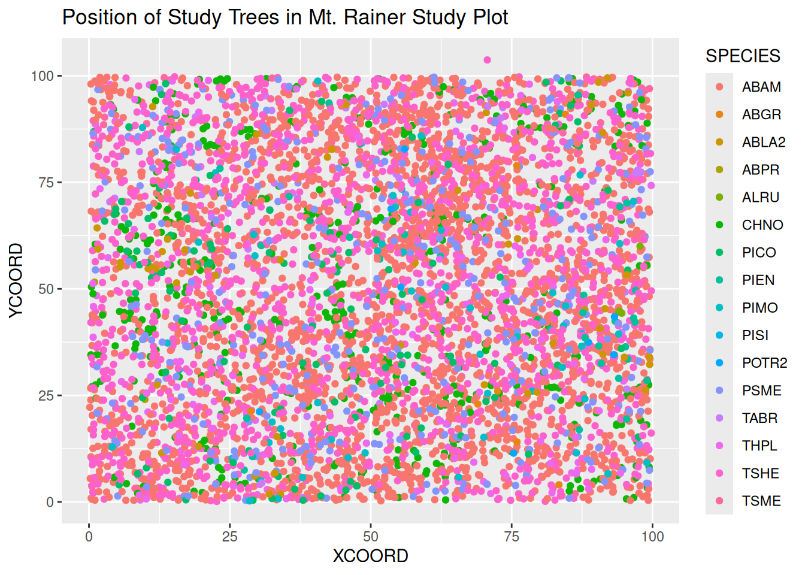
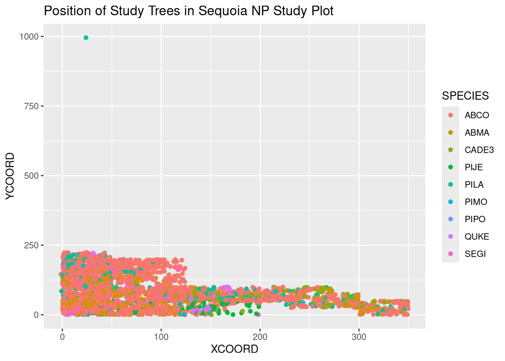
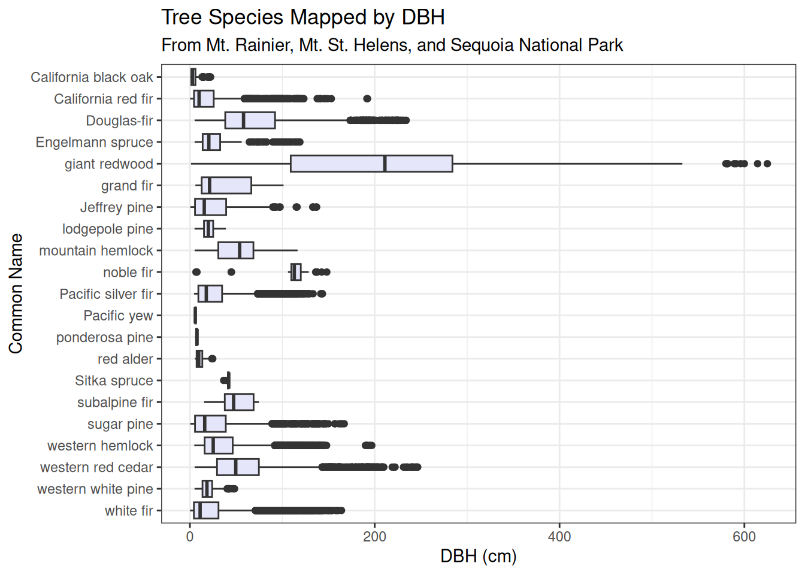
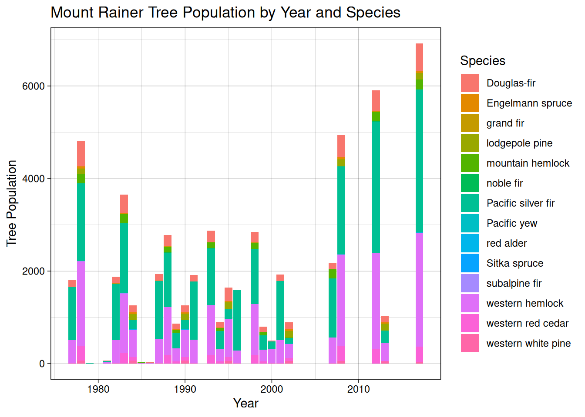
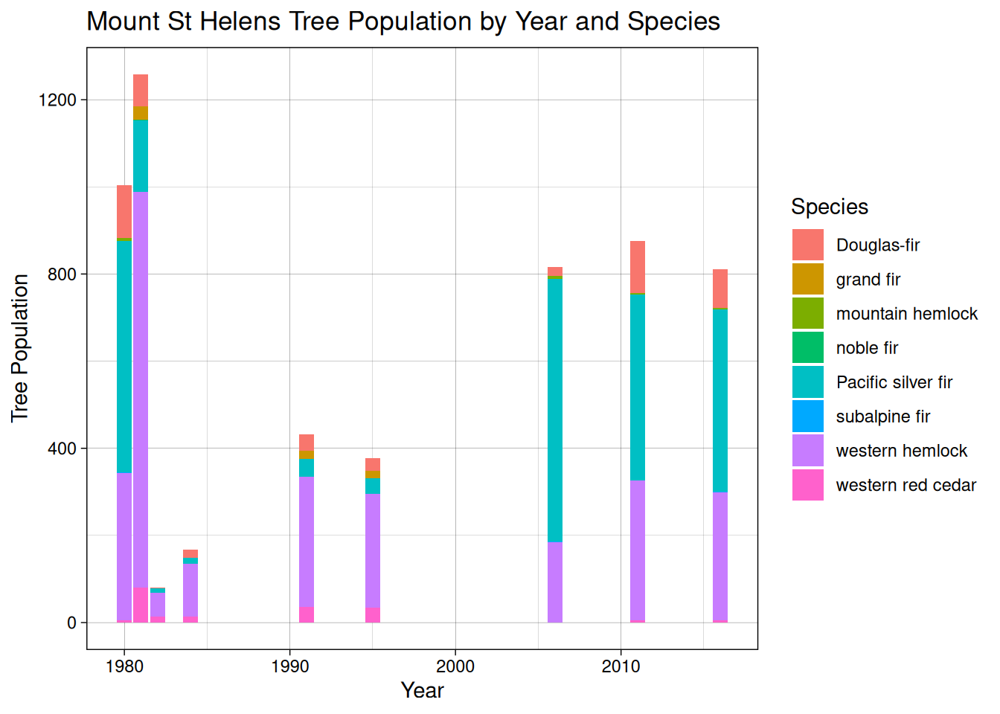
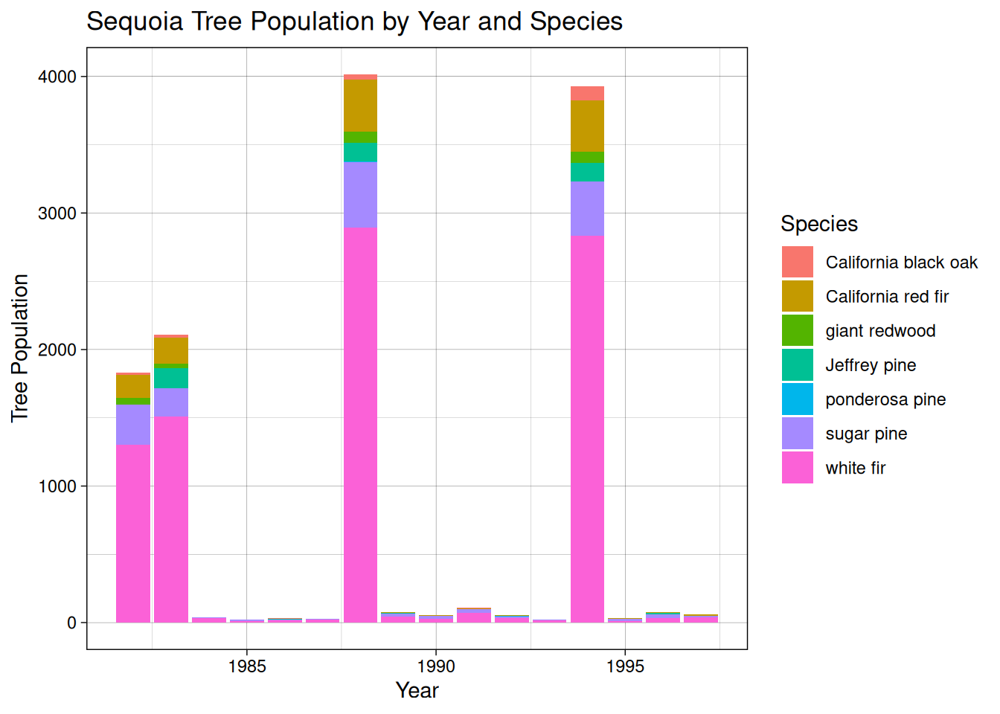
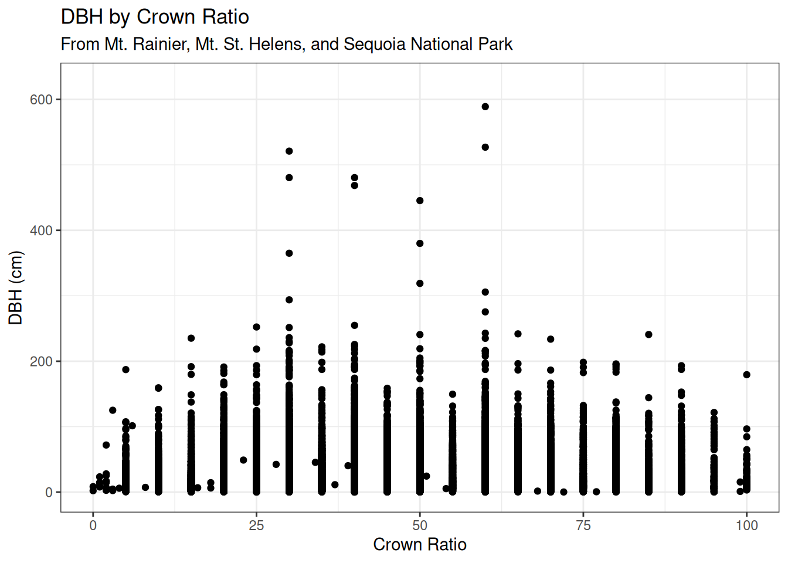
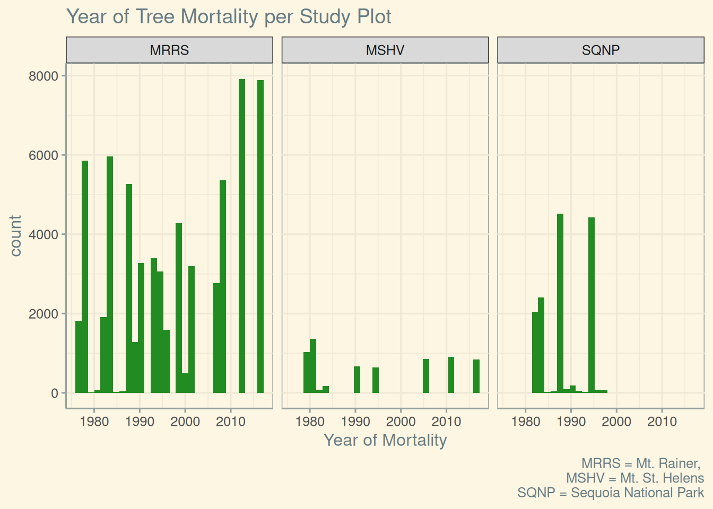
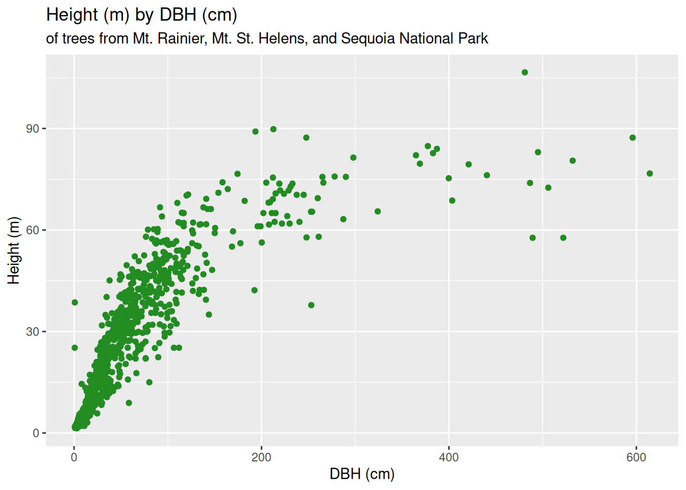
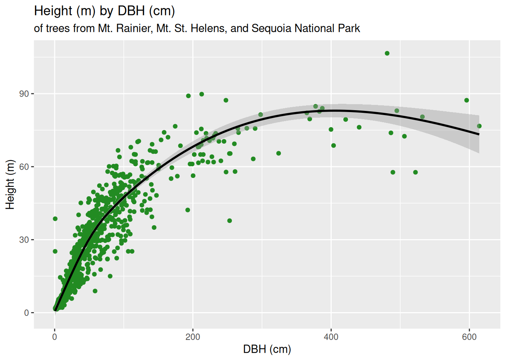

Introduction
The HJ Andrews Forest is a 6,400 hectare plot of forest within the state of Oregon. The forest is cooperatively managed by the United States Forest Service, the Oregon State University, and the Willamette National Forest. The purpose of HJ Andrews Forest is to apply long-term ecological studies to various functions within a forest system, such as forest gap dynamics and wildfire management. Data collected during these studies are then freely published online to be used by any researcher or persons interested in the studies conducted within HJ Andrews Forest, such as this blog post. The HJ Andrews Forest Data Catalog, on the other hand, encompasses data from all over the West Coast of the United States.
The data covered within this blog post has been collected for one hundred and fourteen years within the HJ Andrews Forest Data Catalog, within plots scattered throughout the Pacific Northwest. Since this data has a huge geographic range that is too large to analyze succinctly, we narrowed our analysis down to three Permanent Study Plots (PSP): Mt. St. Helens and Mt. Rainier in Washington, and Sequoia National Park in California. We wanted to focus on the mortality at each plot and how it related to other ecosystem factors and species regeneration.
Methods
To acquire our data, we navigated to the “Data” section of the HJ Andrews Experimental Forest website (linked here). We found the study labeled “Long-term growth, mortality and regeneration of trees in permanent vegetation plots in the Pacific Northwest, 1910 to present” with the code “TV010”. This study has eight large datasets, containing coordinates, measurements, mortality, heights, plot characteristics, and GPS data, available to the public to download. We submitted our names, emails, and affiliations to download data from this website.
Each dataset is accompanied by a metadata information page, which includes measurement methods, keys for column names, and other necessary information for digesting each dataset. These data proved useful in our later data dissection, especially for species codes.
Our goal was to explore the significant forest features of three parks of our choice; Mt. St. Helens and Mt. Rainier in Washington, and Sequoia National Park in California. Using Rstudio and the ggplot package, we created a series of graphs depicting information such as tree position, DBH by species, DBH with crown ratio, tree height, tree population, and tree mortality.
Results
In order to properly assemble some of the data, we had to utilize the ‘left_join’ verb within R Studio, in which we used the “Taxonomic Code” columns as the key. Once data was properly meshed in a joined format, we were able to assemble graphs using ‘ggplot’. We ended up with 9 in total, all looking at different aspects of the three PSPs we focused on. In order of appearance in this blog post they are as follows: Position of Study Trees in Mt. Rainier PSP, Position of Study Trees in Sequoia National Park PSP, Tree Species Mapped by DBH among all three PSPs, Mt. Rainier Tree Population by Year & Species, Mt. St. Helens Tree Population by Year & Species, Sequoia National Park Tree Population by Year & Species, DBH by Crown Ratio among all three PSPs, Year of Mortality for all three PSPs, and lastly Height by DBH among all three PSPs. Let’s take a look at them in more detail.
Figure 1:
This is a representation of the distribution of trees in the Mt. Rainer study plot, colored by species. We were aiming to understand the density of trees within the plot. However, this turned out to be a jumbled mess of points of different colors, which is not useful for visualization.
Figure 2:

Here is the same graph for Sequoia National Park. This one is even denser due to an outlier tree, which compresses the rest of the data in the plot. Especially with this outlier tree, this graph proves to not be all that useful due to its chaotic look. Although, it is interesting to note how much larger this plot is in comparison to Mt. Rainier, as the majority occupies a space from an X-coordinate of ~250 and a Y-coordinate of 350, compared to Mt. Rainier’s 100 x 100.
Figure 3:

This graph took a lot of trial and error to create, as we were left with a bunch of NAs we had trouble getting rid of, the spacing within the code itself was wonky and needed adjustment, along with the join process being difficult at first. But after all was said and done, a very useful and good looking graph was able to be assembled. What sticks out immediately is the dramatic difference in Giant Redwood (S. giganteum), from the rest of the species. The outliers for this massive species measure at an incredible 600+ cm in DBH, a truly astounding metric.
Figure 4:

Figure 5:

Figure 6:

Though the above three bar charts contain gaps due to non-study years, the data can still be analyzed. We can see populations of tree species grow and decline as follows:
Mt. Rainier: Western hemlock and Pacific silver fir grew in population in the 2000s, while most of the other species stayed the same in proportion. We can also see that even in sparse data collection years, the species makeup is proportional to that found in full measurement years.
Mt. Saint Helens: Western hemlock populations fell after 1990, and red alder disappeared completely after 2005. Douglas-fir made up a consistently small proportion of the species makeup through all measurement years.
Sequoia: These tree populations stayed relatively stable year-to-year, with white fir being found more frequently after around 1987. It was also around this time that giant redwoods were being measured, where they had not been before.
Figure 7:

Here we looked at DBH by Crown Ratio of trees at all three of the PSPs. Crown Ratio is a metric assessing the percent of a tree’s height with live branches around one third or more of the bole’s circumference. It has the appearance of a somewhat normal distribution, with large outliers at 30% and 50%.
Figure 8:

Mt. St. Helens had the least mortality compared to other study plots. Mortality at Mt. Rainer started to increase around 2009, corresponding to the mountain pine beetle outbreak in the Western US in 2009. This is a goal that we set at the beginning of our research: We aimed to line up our data with historical events that would prove an explanation for a skew or a spike in our visualization.
Figure 9:

Figure 10:

For Figures 9 & 10, we utilized the joining of a separate table to complete them, and the result was well worth it. We wanted a classic forestry graph: showcasing height (in meters) by DBH (in centimeters) of the trees at all three PSPs. It falls in line with what we typically see of charts of the same nature, which we have been looking at all semester. The only difference amongst the two is that for Figure 10 we added a line using ‘geom_smooth’ to visualize the average trend of the spread of data points. It follows a logarithmic form at first, before decreasing around the 400 cm DBH mark.
Conclusion
Although the H.J. Andrews Forest was only established in 1948, the research and management of the forest stand by all of the respective agencies and institutions has proven invaluable in understanding the changes forests undergo over an extended time. We achieved our goal of visualizing a historic ecological event in the Western United States and matching it up with the data we chose.